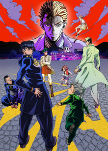
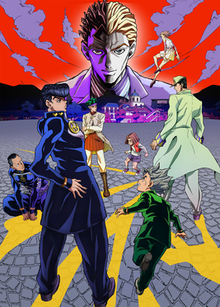

David Productions is a Japanese animation company, creating adaptations various forms of media, including "Fire Force", "Cells at Work!", and "Jojo's Bizzare Adventure"
 


An example of their work can be found here
Part Four Final Poster by DatBot from wikipedia.org CC-BY-SA
Fire Force Volume 1 by Bagas Chrisara from wikipedia.org CC-BY-SA
Cells at Work Volume 1 by Ronhjones from wikipedia.org CC-BY-SA